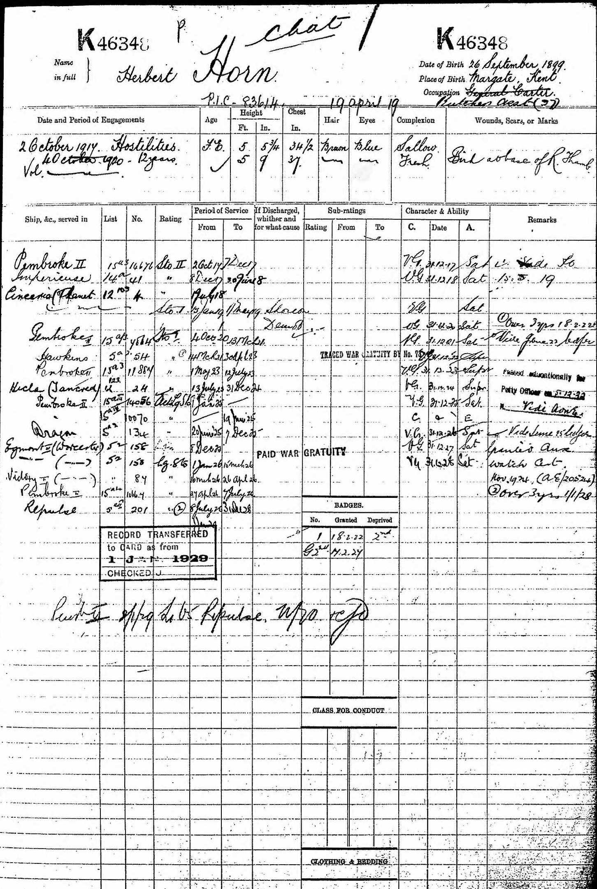
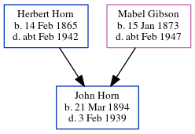

Herbert James Frederick Horn 1899 - c1958
[ Home ] | [ Calendar ] | [ Surnames Index ] | [ Errors ] | [ Family History ]A postman driver and the child of Herbert Horn (a carter) and Mabel Gibson, Herbert Horn, the second cousin twice-removed on the father's side of Nigel Horne, was born in Margate, Kent, England on 26 Sept 18991,2,3, was baptised there at St John the Baptist Church on 25 Oct 1899. He married Mary Harlow (with whom he had 3 surviving children Stanley F, Joan M J and Kathleen D M) in Thanet, Kent, England around Aug 19295.
During his life, he was living at 84 Byron Road in Margate on 2 Apr 19118 - less than a mile from his first cousin once-removed on his father's side Isaac Horne who was living at 23 Victoria Avenue, Northdown in Margate; at 21 St Margarets Avenue, Haringey, London, England in 19346; at 70 Waye Avenue, Hounslow, London on 29 Sept 19391; and at 42 Western Road in Margate in 19557. He served in the navy from 2 Oct 1917 to 31 Dec 1928 (Royal Navy - service number K46348).
He died c. Nov 1958 in Thanet4.
Parents
- Herbert James was born on 14 Feb 1865
- Mabel Ellen was born on 15 Jan 1873
Citations
- 1939 Register - Findmypast (was the head of the household)
- British Royal Navy Seamen 1899-1924 - Findmypast
- Kent, Canterbury Archdeaconry baptisms 1538-1912 - Findmypast
- England & Wales deaths 1837-2007 - Findmypast
- England & Wales Marriages 1837-2005 - Findmypast
- London, England, Electoral Registers, 1832-1965 Ancestry.com Operations, Inc.
- 1955 Kelly's Thanet Directory
- 1911 Census for England & Wales - Findmypast (was age 12 and the son of the head of the household)
Media
Herbert Horn - Military Record

1955 Kelly's Thanet Directory

Merchant Seamen Transcription - TNA-BT350-2130819638-1
England & Wales births 1837-2006 - BMD/B/1899/4/AZ/000285/313
England & Wales deaths 1837-2007 Transcription - BMD-D-1958-4-AZ-000512-023
Kent, Canterbury Archdeaconry baptisms 1538-1912 - GBPRS/CANT/B/96280311
1911 Census for England & Wales - GBC/1911/RG14/04491/0861/4
Kent, Canterbury Archdeaconry baptisms - GBPRS/CANT/B/96229270
England & Wales marriages 1837-2005 - BMD/M/1929/3/AZ/000683/094
1939 Register Transcription - TNA-R39-0850-0850I-023-27
England Births & Baptisms 1538-1975 - R_884652023
England Births & Baptisms 1538-1975 - R_885883233
British Royal Navy Seamen 1899-1924 - GBM-ADM188-273604
Family Tree
Map
Generated by ged2site. Last updated on Jul 3, 2024
Known Issues
Parent Herbert is listed in the residence for 31 Mar 1901, but this child is not
Parent Mabel is listed in the residence for 31 Mar 1901, but this child is not
Listed in the residence for 1955, but spouse Mary Harlow is not
Location for the event between 2 Oct 1917 and 31 Dec 1928 is empty